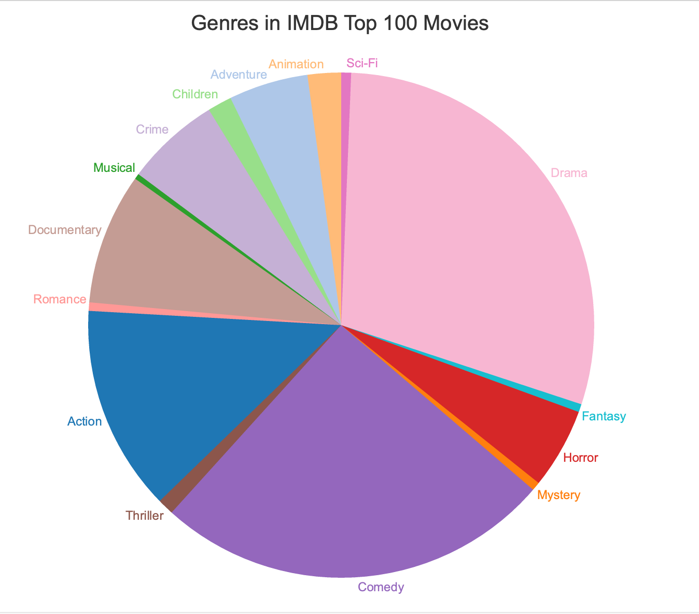

Marks
- Area (states in the United States)
Channels
- Color (hue)
- Represents categorical attribute: red - Trump, blue - Clinton
- This is a good mapping because colors are separable, being expressive and effective to deliver the information. The states are grouped by colors. Viewers can tell from this visualization immediately which candidate would have been elected by women in each state by refering to different colors (indicating different candidates).
- Size → Area
- Represents categorical attribute: different area represent different states in the U.S.
- This is a good mapping because it shows which states vote for Clinton/Trump and show how large in area the states are.
- Position → Both (spatial region)
- Represents categorical attribute: states
- This is a good mapping because the visualization follows the accurate real locations of states in the US, displays clearly on in which states which candidate received the majority of votes
- Size → Length
- Represents ordered diverging attribute: number/proportion of votes received by each candidate
- This is a good mapping, since it's accurate and separable. There's a middle point indicating winning half of the votes will win, and there are numbers corresponding to number of votes won by candidates with accurate bar length.
Colormap(s)
- Categorical
- Represents categorical attribute: candidates (blue/red for Clinton/Trump)
- This is a good mapping because the color choice are roughly the same saturation and value, and perceptually distant. With different colors -> different category, viewers can easily distinguish from visualization that woman prefer to vote for Clinton rather than Trump in 2016

Marks
- Points (points in the graph represent each batted ball)
- Lines (horizontal lines in the graph represent classification of the hit)
Channels
- Color (saturation)
- Represents continuous quantitative attributes: the scale at the top-left of the visualization
- This is good mapping because with orange and purple, the balls are grouped. Viewers can easily tell how good that hit is in terms of scoring value
- Position → both horizontal and vertical
- Represents continuous quantitative attributes: the exit velocity (horizonal) and launch angle (vertical) of each batted ball
- This is a good mapping because viewers can know from the visualization that which launch angle and exit velocity player used and how it differs from the other points. With evenly scaled x and y axis, the information delivered is accurate. With horizontal dot lines indicating Ground Balls, Line Drives, Home Runs, Fly Balls, and Pop-ups, the points are grouped according to their vertical position.
Colormap(s)
- Divergent
- Represents ordered, quantitative attribute: scoring value
- This color map used white as the midpoint color; purple indicates that scoring values are below average, and orange indicates scoring values are above average. Orange and purple are used to indicate extremes of the range.
- We think this is overall a good mapping because viewers can clearly see if scoring value is below, in the middle, or above the average via colors with contracts. However, different from red - Trump and blue - Clinton, there's no connection between below average and purple, and above average and orange. Thus, we have a little doubt whether the two colors are a good choice for colormap here.

Marks
- Areas (the area of each slice in the pie chart represents percentage that the category takes place in those 100 movies)
Channels
- Color
- Represents categorical attributes: different categories/genres of movies in the dataset
- This is a poor choice, since there are too many colors showing up in the pie chart, so it's kind of hard to follow. Those are issues with effectiveness - separability. Moreover, there's no clear connection between the color and usual movie vibes/contents of the category, so it might be better if there's more meaningful colors assigned for the genres.
- Size → Area
- Represents ordered, quantitative attributes: the percentage of categories spreading among the 100 movies
- This is a good mapping, as it's straightforward showing the distribution of different genres by reading area of every slice with accuracy.
- Tilt
- Represents ordered, quantitative attributes: the percentage of categories spreading among the 100 movies
- This is a good mapping, as it's accurately showing the distribution of different genres by reading angle of every slice.
Colormap(s)
- Categorical
- Represents categorical attributes: different genres of movies in the dataset
- This is a not bad choice since the attribute (genre) consists of categorical data. Thus, we use different colors to represent different categories. However, there are too many categories, therefore too many colors, shown in the chart, which is kind of hard to recognize the categories.